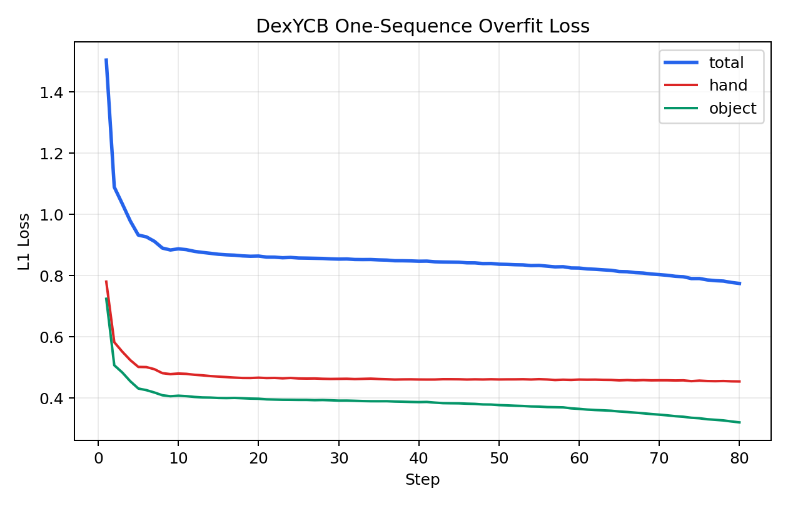
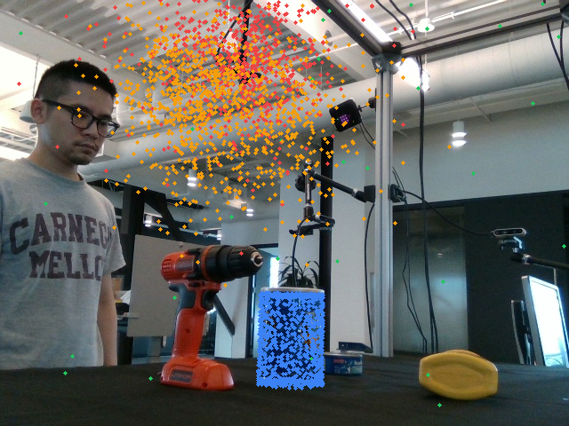
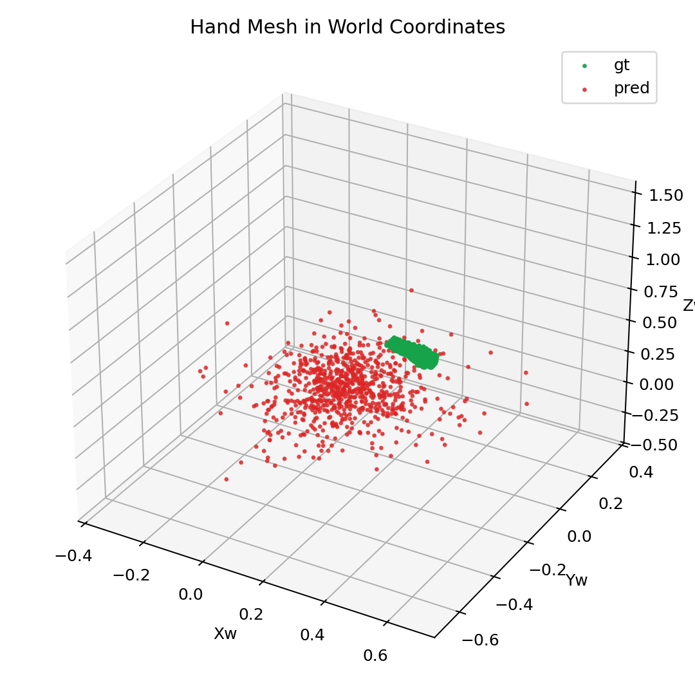
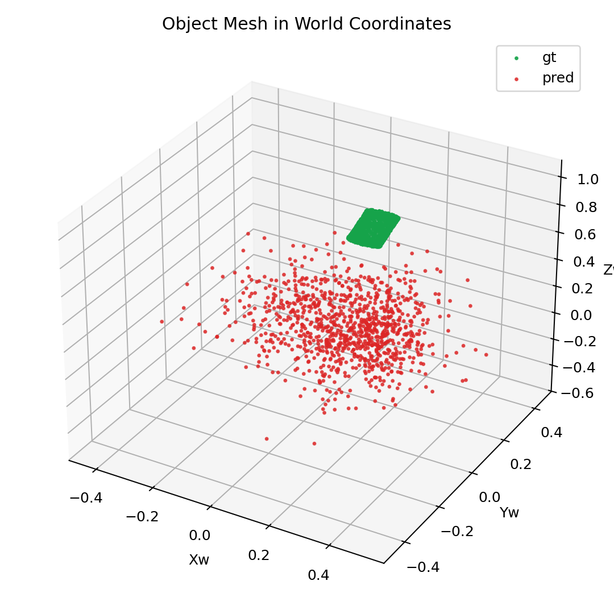

Loss Curve
The rerun is stable: the total objective drops quickly in the first 20 steps and continues a slower monotonic descent through step 80.
This node republishes the first real DexYCB overfit as reviewable public assets.
The fixed-seed rerun converged from 1.5041 to 0.7742 in
80 steps. Object alignment is already near the tabletop target in image
space, while the hand prediction still drifts high and remains the dominant residual.

The rerun is stable: the total objective drops quickly in the first 20 steps and continues a slower monotonic descent through step 80.

Projected object geometry lands close to the tabletop target. Hand projection remains visibly offset upward, which matches the larger hand-side L1.

World-space GT vs prediction for the hand. This is the main remaining misfit in the current overfit bootstrap.

World-space GT vs prediction for the object. The object branch is already much tighter than the hand branch in this single-sequence run.
The published public node keeps the stable PNG review assets only: loss curve, overlay compare, hand world scatter, and object world scatter.
This older node no longer advertises direct PLY downloads because the public asset bundle for this page is limited to the review figures above.
The object branch already finds a workable pose and shape alignment under the toolkit-based DexYCB loading path and Stream3R world conversion.
The hand branch remains the limiting factor. The current structured-latent bootstrap is still a direct world-vertex regressor, not the full renderer-supervised Trellis mesh decoder.